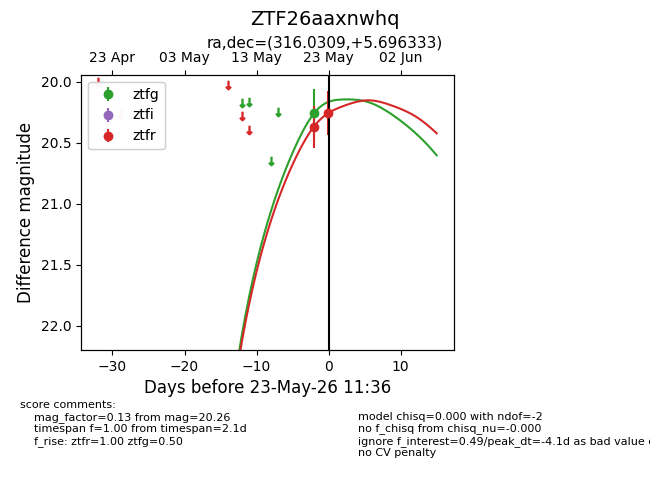
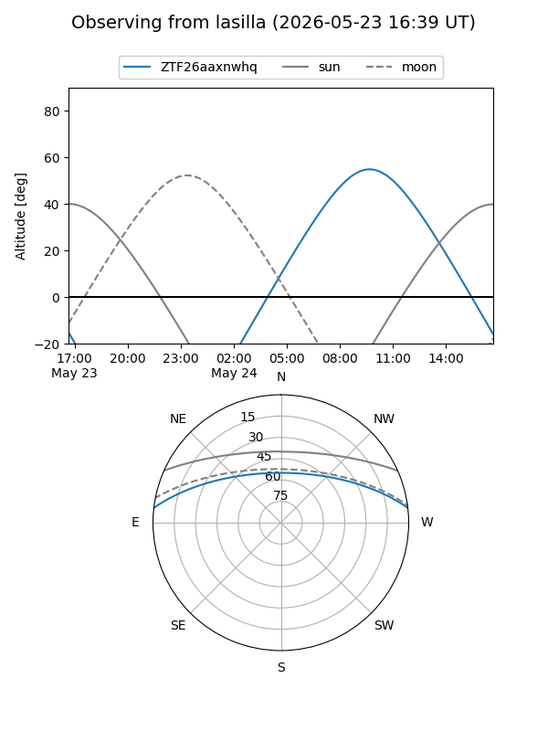
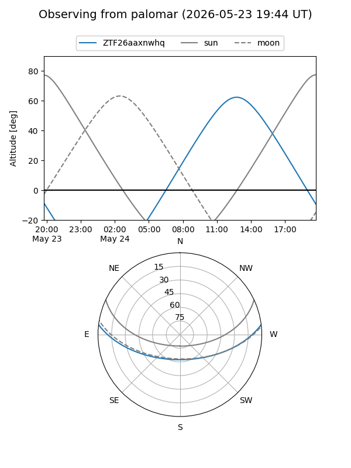
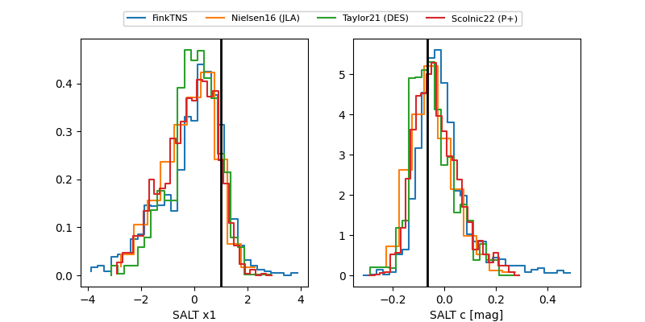

ZTF26aaxnwhq
Target ZTF26aaxnwhq at 2026-05-23 11:37
Aliases and brokers:
lsst-FINK: link
lsst-Lasair: link
lsst-ALeRCE: link
ztf-FINK: link
ztf-Lasair: link
ztf-ALeRCE: link
alt names
ZTF26aaxnwhq (ztf,fink_ztf)
Coordinates:
equatorial (ra, dec) = 316.0309,+5.69633
equatorial (HMS+DMS) = 21:04:07.42,+05:41:46.80
galactic (l, b) = (54.9366,-26.05858)
Flags:
Photometry:
last ztfg=20.26, ztfr=20.26
1 ztfg, 2 ztfr detections
Lightcurve

Visibility


Additional plots
